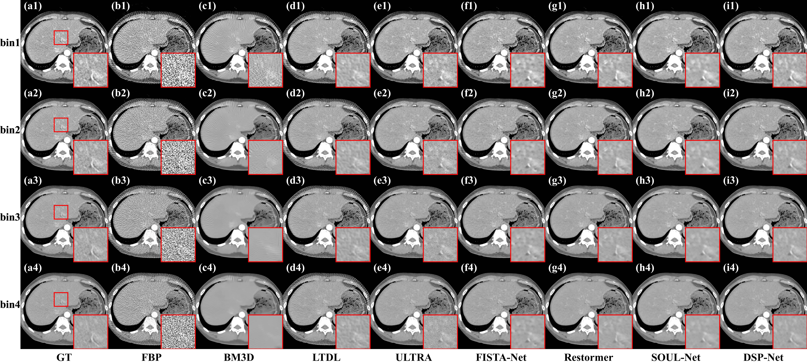
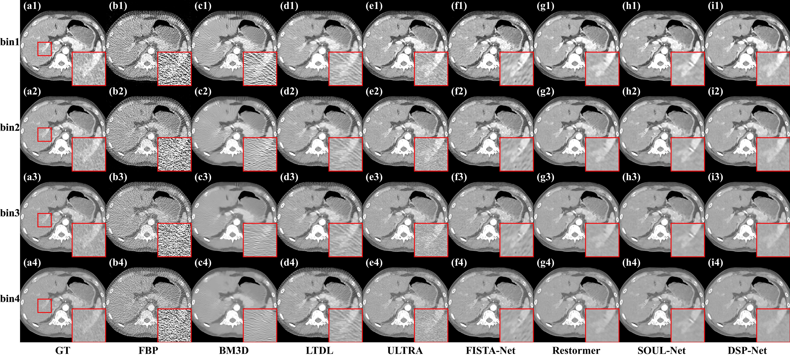
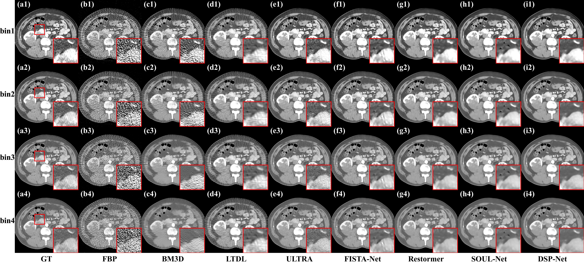

We propose DSP-Net, a meticulously architected deep unrolling framework custom-tailored for high-fidelity joint low-dose and sparse-view photon counting computed tomography (PCCT) reconstruction.
Our approach augments conventional iterative reconstruction by establishing a unified optimization framework which synergizes two distinct perspectives to characterize the disentangled spectral priors. The first perspective utilizes a low rank plus sparse (\(L\)+\(S\)) matrix decomposition to disentangle global structures from spectral discrepancies. Specifically, the low rank component \(L\) captures consistent anatomical features across energy bins by imposing a nuclear norm constraint \(\|L\|_*\), which exploits inter-channel redundancy. Simultaneously, the component \(S\) models residual energy-specific details through an \(\ell_1\)-norm sparsity constraint. The second perspective incorporates convolutional dictionary learning to achieve high-fidelity feature representation. Specifically, we introduce a energy-invariant dictionary with its energy-shared coefficient maps to characterize universal structures, and an energy-specific dictionary with its coefficients to capture unique spectral variations. Furthermore, we introduce a structural consistency constraint to align the low-rank and dictionary-derived energy-shared components, enhancing artifact and noise suppression. By unrolling the iterative optimization into a deep unrolling network, DSP-Net incorporates learnable singular value thresholding, lightweight attention-based proximal networks, and multi-stage multi-scale convolutional dictionary networks for high-fidelity reconstruction.
We show that DSP-Net can turn low-dose sparse-view PCCT measurements into high-quality spectral CT reconstructions that preserve fine structural details with superior spectral discrimination. We evaluate our method through extensive experiments on both simulated and real datasets, demonstrating its superiority in structural preservation and artifact suppression under joint low-dose and sparse-view scenarios.



We thank SOUL-Net for their excellent work and open-source code-base.